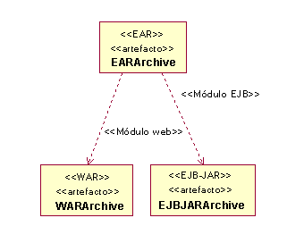
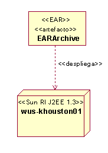
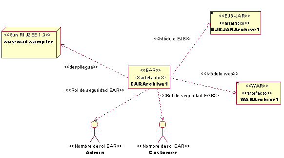

| Directriz: Aplicación J2EE |
 |
|
| Elementos relacionados |
|---|
IntroducciónUna aplicación J2EE es la unidad de despliegue independiente más grande en un sistema J2EE. Consulte la sección Concepto: visión general de Java 2 Platform Enterprise Edition (J2EE) para obtener información general sobre las aplicaciones J2EE. Consulte la sección Directriz: ensamblaje de aplicaciones J2EE para obtener más información sobre la forma en que ensamblar las aplicaciones J2EE. Consulte la sección Directriz: despliegue de módulos y aplicaciones J2EE para obtener más información sobre la forma en que desplegar aplicaciones J2EE. Modelado de aplicaciones J2EEEn el modelo de implementación las aplicaciones J2EE se representan como artefactos UML con un estereotipo <<EAR>>. La formación de archivadores de módulos J2EE en un archivador de aplicación J2EE se puede mostrar de forma gráfica dibujando una dependencia <<EJBModule>> desde los JAR de EJB contenidos hasta el EAR y dibujando una dependencia <<WebModule>> desde los WAR contenidos hasta el EAR.  La correlación de una aplicación J2EE con un nodo específico (esto es, un servidor de aplicaciones) se puede mostrar de forma gráfica dibujando una dependencia <<deploy>> desde el EAR hasta el nodo servidor de aplicaciones, tal como se muestra en el siguiente diagrama.  Además de modelar qué archivadores de módulos se empaquetan en el archivador de aplicación, también existe la posibilidad de modelar propiedades, que en última instancia se documentan en los descriptores de despliegue de los archivadores de aplicación y módulos. A continuación se muestra un ejemplo de cómo modelar algunas de estas propiedades:  En el diagrama anterior se muestra el ensamblaje de un archivador EJB y web en un EAR. Observe el modelado de los roles de seguridad, que la aplicación utiliza para determinar qué tipos de usuarios pueden acceder a determinadas partes del sistema, o hasta de forma más detallada, a nivel de acceso a métodos. Descriptores de despliegue de aplicaciones J2EEUna aplicación J2EE contiene un descriptor de despliegue de aplicación J2EE en forma de un archivo que se denomina "application.xml" El descriptor de despliegue se debe colocar en el directorio META-INF/. El descriptor de despliegue indica en una lista los módulos que se empaquetan en la aplicación, así como instrucciones para personalizar la aplicación. El contenido del descriptor de despliegue se establece al ensamblar la aplicación J2EE. Consulte la sección Directriz: ensamblaje de aplicaciones J2EE para obtener más información sobre la forma en que ensamblar aplicaciones J2EE. Consulte la sección Concepto: visión general de Java 2 Platform Enterprise Edition (J2EE) para obtener información general sobre los descriptores de despliegue. |
© Copyright IBM Corp. 1987, 2006. Reservados todos los derechos. |